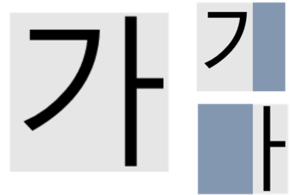
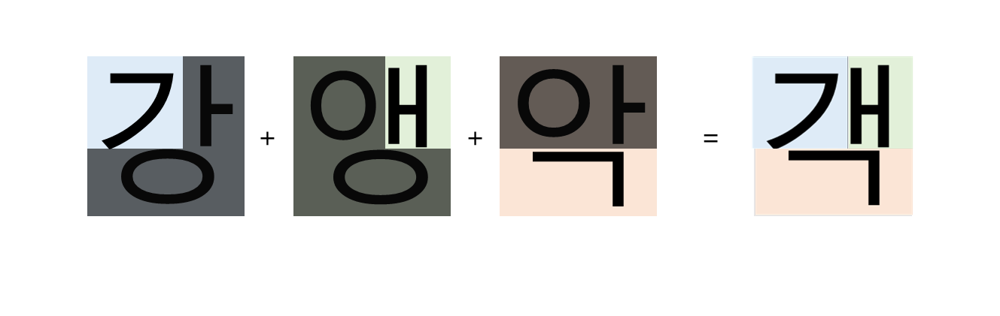
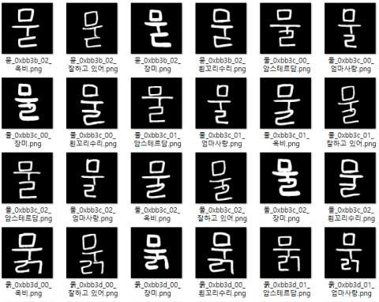

데이터셋 구축
실사용 한글 2,841자와 6개 폰트, 3종 Augmentation을 조합해 자소 단위 픽셀 레이블을 포함한 합성 이미지 51,138장 생성.
Korean Handwriting Analysis
손글씨 문장을 문자와 자소 단위로 분해하고, 형태·위치·자간·크기·기울기를 분석하여 맞춤형 교정 피드백을 제공하는 딥러닝·기하학적 후처리 기반 서비스.
00 / OVERVIEW
데이터셋 생성부터 한글 구조별 FPN 학습 전략 및 추론 파이프라인 구성, 후처리 알고리즘, Python 분석 서버 구현까지 전 과정을 직접 수행한 첫 딥러닝 모델 개발 프로젝트.
CRAFT의 Character Region Score와 기하학 알고리즘을 결합해 문자를 분리하고, FPN 모델로 초성·중성·종성을 픽셀 단위로 분석했다.
문자를 판독하는 OCR이 아닙니다. 사용자가 선택하거나 직접 지정한 예문을 Canvas에 작성하면, 이미 알고 있는 원문을 기준으로 손글씨를 문자·자소 단위로 분해하고 목표 인쇄체와 비교하는 분석 시스템입니다.
HOW IT WORKS
사용자가 분석할 예문과 교정 기준으로 삼을 인쇄체를 선택합니다.
알려진 원문을 Canvas에 작성하고 분석 서버로 전달합니다.
CRAFT 중심점과 Voronoi·연결 성분 후처리로 문자를 분리합니다.
원문의 한글 구조에 맞는 FPN으로 초성·중성·종성을 분할합니다.
목표 인쇄체와 비교해 자형·위치·자간·크기·기울기를 평가합니다.
구조화된 분석 결과를 Gemini가 항목별 교정 문장으로 변환합니다.
01 / PIPELINE
한글이 자소에서 문자와 문장으로 조합되는 과정을 거꾸로 추적한다.
문장 정규화 → CRAFT 중심 추출 → Voronoi 문자 분리 → FPN 자소 Segmentation → 형태·위치 평가 → 점수 및 피드백 생성.

02 / CONTRIBUTION
데이터셋 구축, FPN 학습, 문자 분리 후처리와 Python 분석 서버를 담당했습니다.
실사용 한글 2,841자와 6개 폰트, 3종 Augmentation을 조합해 자소 단위 픽셀 레이블을 포함한 합성 이미지 51,138장 생성.
한글 구조를 6개 유형으로 분류하고 유형별 FPN 모델을 학습하여 초성·중성·종성 Segmentation 수행.
CRAFT Character Region Score의 가중 중심 추출, 문장 기울기·자간 분석, Voronoi 기반 문자 분리와 연결 성분 Reclaim 후처리 구현.
전처리부터 점수 생성까지 분석 모듈을 연속 실행하고 결과 JSON과 이미지 경로를 서버에 반환하는 파이프라인 관리.
정량화된 자소 형태·위치 및 문장 분석 점수를 Gemini API에 전달하고, 사용자가 이해할 수 있는 교정 가이드로 변환하는 피드백 구조 공동 설계.
03 / RESEARCH DESIGN
일반적인 문자 인식이 아니라 손글씨의 구조적 완성도와 시각적 정렬성을 정량화하는 문제로 정의했다.
QUESTION / 01
QUESTION / 02
QUESTION / 03
04 / DATASET ENGINEERING
모든 완성형 문자를 수작업으로 Labeling하는 대신, 한글의 초성·중성·종성 조합 규칙을 데이터 생성 알고리즘으로 전환했다.
AI Hub 한국어 말뭉치 약 29억 자의 등장 빈도를 분석해 전체 11,172자 중 실제 사용된 2,841자를 학습 대상으로 축소.
종성 유무 2종과 모음 형태 3종을 조합해 한글 배치를 6개 유형으로 분류하고 유형별 좌표 체계를 유지.
초성·중성·종성의 종류뿐 아니라 모음 방향과 종성 유무에 따른 배치 차이를 포함하도록 237개 기준 문자를 선정했다. 일부 영역을 Masking하여 형태와 위치 정보를 함께 가진 자소 Component를 확보했다.
2,841자 × 나눔손글씨 6폰트 × 위치·크기 변형 3종 = 자소 단위 Pixel Label을 포함한 합성 문자 이미지 51,138장.



05 / CRAFT DETECTION
CRAFT의 일반적인 텍스트 영역 검출 결과를 그대로 사용하지 않고, Character Region Score에서 문자 영역 후보를 추출한 뒤 각 영역의 가중 중심을 글자 기준점으로 사용했다.

임계치 이상의 Region Score 픽셀을 묶고 각 영역의 무게중심을 문자 중심 후보로 계산.
입력 원문의 글자 수보다 중심 후보가 많으면 인접 후보를 병합한다. 후보가 부족하면 잘못된 분석을 진행하지 않고 다시 작성하도록 요청한다.
중심 간 기울기와 x축 거리를 문장 기울기·자간 분석에 사용하고, 문자 영역 확장의 Seed로 전달.
06 / CHARACTER SEPARATION
CRAFT로 추출한 문자 중심을 Seed로 Voronoi 영역을 생성한 뒤, 서로 연결된 픽셀은 같은 글자일 가능성이 높다는 가정으로 Label을 보정했다.
단, 획이 맞닿는 손글씨에서는 이 가정이 항상 성립하지 않는다.


07 / SEGMENTATION
여러 해상도의 특징을 결합하는 FPN 구조로 자소를 분리하고, 사용자가 목표로 선택한 인쇄체의 자소 배치를 기준 템플릿으로 활용해 결과를 보강했다.

종성 유무 2종과 모음 형태 3종을 조합해 모델이 처리해야 할 한글 배치 복잡도를 분리했다.

‘캡스톤디자인’ 문장의 자소 분할을 시각화했다. 일부 글자의 오분류도 함께 확인하여 후처리 보강의 필요성을 도출했다.

선택한 인쇄체의 자소 Label까지의 Euclidean distance map으로 각 잉크 픽셀을 최근접 Label에 할당하고, 하나의 연결 성분에 섞인 소수 Label을 다수 Label로 통일하여 경계 오분류를 보강했다.
08 / SCORING & FEEDBACK
문자 중심, Bounding Box, 자소 Segmentation을 다섯 평가 항목으로 변환하고, 구조화된 결과를 Gemini에 전달해 설명형 피드백을 생성했다.
인접 문자 중심을 잇는 각도를 평가한다. 1° 이하는 감점하지 않고, 30° 이상은 해당 구간을 0점으로 처리하며 그 사이는 비선형 감점한다.
일반 자간의 중앙값을 기준으로 상대 오차를 계산한다. 띄어쓰기 구간은 일반 자간의 1.3배를 기대값으로 사용한다.
문자 Bounding Box의 폭과 높이를 각각 50%로 평가하고, 문장 내 중앙값 대비 상대 오차로 크기 일관성을 측정한다.
선택한 인쇄체와 손글씨의 자소별 픽셀 수와 중첩 영역을 비교해 초·중·종성 형태의 유사도를 평가한다.
초성–중성, 중성–종성 중심 벡터의 각도와 길이를 기준 인쇄체와 비교해 공간 배치 점수를 계산한다.
Jamo 점수는 형태와 위치 점수의 평균이다. 항목별 임계값과 최종 가중치는 프로젝트 범위에서 휴리스틱하게 설정했다. 최종 점수는 서예 전문가의 절대 평가를 대체하지 않으며, 선택한 기준 인쇄체와의 차이 및 동일 문장 내부의 상대적 불균형을 탐지하기 위한 지표다.
GEMINI FEEDBACK CONTRACT
자형, 자소 상대 위치, 자간과 띄어쓰기 여부, 기울기, 크기 분석 결과를 detailedJson으로 전달.
띄어쓰기 구간의 1.3배 간격 허용 규칙과 다섯 항목의 해석 기준을 명시하고, 항목별 1–2문장 피드백을 요청.
자형:…|위치:…|자간:…|기울기:…|크기:… 순서와 구분자를 고정해 클라이언트가 항목별로 표시할 수 있는 응답 계약 구성.
09 / SERVICE EXPERIENCE
사용자는 예문과 목표 인쇄체를 선택해 Canvas에 손글씨를 작성하고, 종합 점수와 다섯 평가 항목의 결과를 확인합니다.
10 / DEMO
손글씨 작성부터 분석 결과와 항목별 교정 피드백을 확인하는 전체 서비스 흐름.
11 / REVIEW
정제된 데이터와 준비된 모델이 제공되는 학습 환경에서 벗어나, 불완전한 데이터와 예외가 존재하는 현실적인 조건에서 처음 수행한 딥러닝 모델 개발 프로젝트다. 문제 정의, 데이터셋 생성, 모델 학습, 후처리 및 서비스 연동까지 직접 연결하며 실제 AI 개발 과정의 불확실성을 경험했다.
한글의 조합 원리를 데이터 설계에 반영하고 CRAFT·FPN·기하학적 후처리를 하나의 분석 파이프라인으로 완성한 경험은 컴퓨터비전 문제를 독립적으로 설계하고 구현할 수 있다는 확신으로 이어졌다. 이 프로젝트를 기점으로 이후 두 프로젝트 또한 컴퓨터비전 중심의 딥러닝 연구로 확장했다.
폰트 기반 합성 데이터는 정확한 Pixel Label을 자동 생성할 수 있지만, 실제 손글씨의 불규칙한 획과 입력 환경을 충분히 반영하지 못한다. 실제 손글씨 Label 확보와 획 굵기·끊김·겹침을 포함하는 Domain Augmentation 적용이 후속 과제다.
합성 과정에서 일부 가로형 중성과 종성이 겹치는 문제가 남았다. 모음 분류 체계를 세분화하고 Label 중첩을 감지해 위치를 조정하는 방식이 후속 개선 과제다.
12 / STACK